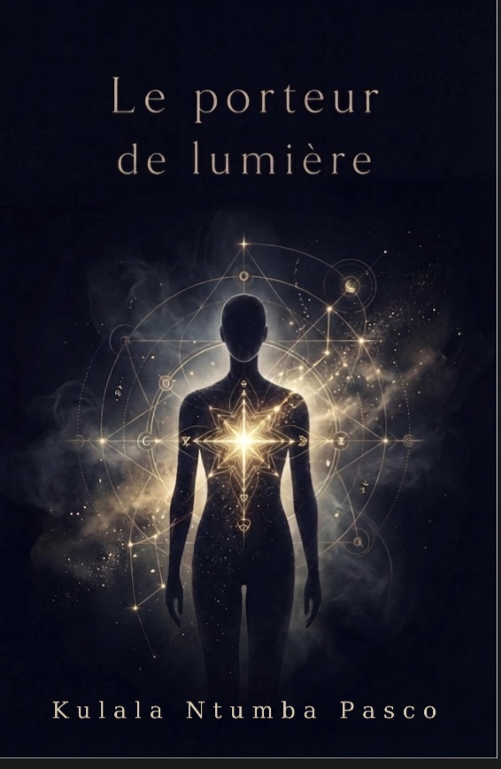

Le Porteur de Lumière
Un voyage initiatique et spirituel sur la transmission et la reconquête de soi. Kulala Ntumba Pasco explore le combat que mènent ces étoiles venues de l'au-delà, porteuses de lumière et destinées à éclairer les êtres humains.

Le Porteur de Lumière · Kulala Ntumba Pasco · Hakvision Éditions · 2026
Synopsis
La lumière détournée, la lumière reconquise
Le Silence régnait depuis la nuit des temps. Descendue du Royaume des Innommables, une Étoile s'incarne sous les traits de Mulesa Kibudi et reçoit la Parole créatrice. Mais les hommes détournent son don pour le pouvoir et la richesse.
À sa mort, son fils Sundy reprend le flambeau. Pour devenir le véritable Porteur de la Lumière, il doit affronter la tyrannie des faux prophètes et vaincre les illusions qui éloignent l'humanité de son âme.
Un voyage initiatique et spirituel sur la transmission et la reconquête de soi.
Une réflexion profonde sur l'insouciance humaine et le rejet de l'essentiel, sur ce que l'humanité néglige, les vérités qu'elle ignore, et cette lumière qu'elle peine parfois à reconnaître.
Kulala Ntumba Pasco
Kulala Ntumba Pasco poursuit, avec Le Porteur de Lumière, son exploration littéraire de la conscience et de l'éveil, déjà amorcée dans L'ŒIL et L'ŒIL Tome 2 : Ainsi je vois le monde. Un auteur fidèle à Hakvision Éditions, dont l'œuvre invite sans cesse à observer, questionner et comprendre autrement.
Kulala Ntumba Pasco, auteur
Découvrir d'autres œuvres